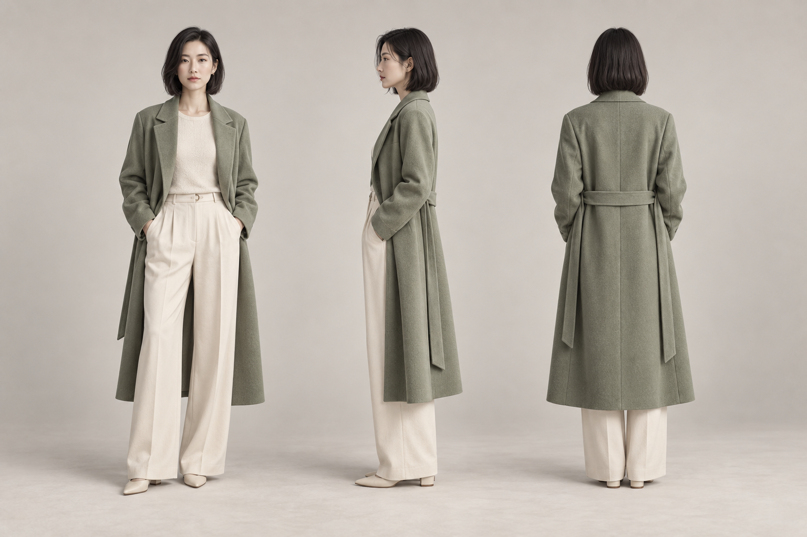

正在制作 短剧项目
雾港来信
一封迟到了十年的信，把两个人带回那个没有说完的雨夜。
故事开发 01 / 04
在同一张创作画布里，整理角色、场景与每一段镜头。
一封迟到了十年的信，把两个人带回那个没有说完的雨夜。
按当前需要进入，不限定创作顺序。
继续上次的创作。

把角色设定、场景和镜头放在同一条创作链路中。
交互原型 · 节点素材与生成结果均为静态演示，生成操作不会调用模型或产生费用。
资产有稳定身份与版本；画布节点只是引用，不会和资产 ID 混用。
角色 · 示例造型
女主 · 27 岁 · 女
外景 · 夜 · 暴雨初歇
关键道具 · 仓库门钥匙
围绕镜头、环境与声音，逐步扩展你的制作流程。
镜头提示词与素材引用在创作画布中整理。后续可从单个场景直接进入预演。
规划中的功能以阶段状态呈现。
从场景资产生成可环视的环境全景，查看反向角度并选定机位。
按线稿或色块锁定构图，在相同结构里探索材质与风格。
通过 Blender 白模摆放站位，从俯视空间关系调度镜头与人物。
整理对白、环境声与配乐，让声音线索跟随镜头节奏。
从画面中定位并清理字幕区域，保留背景画面的连续性。
统一整理风格参考与可复用描述，后续评估接入时机。
配置本地工作流、管理服务连接与项目存储。
选择工具功能与兼容模型，为后续本地连接显示配置入口。
可选系统功能与兼容模型；用户工作流编辑与导入入口不在当前版本。
配置应用输入与结果字段。本预览不会连接站点或读取凭证。
字段含义：提示词 → 应用文本输入；参考图 → 应用图片输入；结果 → 图片或视频输出。禁止在此输入密码或真实密钥。
查看登录与钱包状态。
演示界面不会收集密码、API 密钥或支付信息。
演示当前项目的文件夹视图与同步策略。
DeepWhite / Projects / 雾港来信本地演示